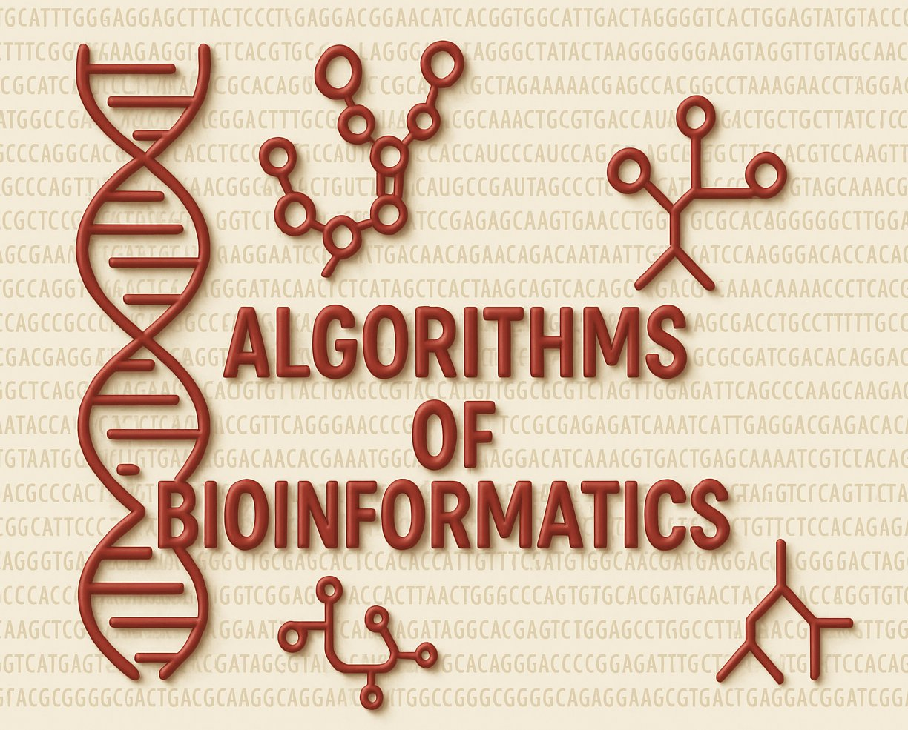

CS 594 – Algorithms of Bioinformatics (Winter 2025-26)

Algorithms of Bioinformatics is a specialization module (Vertiefungsmodul) covering the theoretical foundations of algorithms used in bioinformatics.
The module will introduce students in computer science and related programs to the context in molecular biology, in which algorithmic techniques are an essential tool, but our focus will always be on the abstract algorithmic problems and their theoretical solutions. Prior knowledge of biology is not required; a solid foundation in algorithms and data structures is expected.
Planned Content
- sequence alignments
- string algorithms and indexing
- genome assembly
- signal detection in biological data
- phylogenetic trees
- RNA secondary structure prediction
Quick links
Slido ⋅ Live ⋅ ILIAS ⋅ Campuswire ⋅ Question Gallery ⋅ Units
Lectures
There will be synchronous interactive lectures, starting from October 16. Live participation is expected. Recordings and livestreams will be made available on a best-effort basis; you can find the livestream on the Live page.
Our regular lecture slot is
- Thursdays 12:15–13:45 (s.t.) in H|04, Hörsaal IV;
Units
The module will consist of the following units; each will have a unit subpage (linked in the table) with slides, lecture notes, and video recordings for that unit.
| Week | w/c (Mon) | Lecture | Exercises |
|---|---|---|---|
| 1 | 2025-10-13 | Unit 0: Administrativa | — |
| 2 | 2025-10-20 | Unit 1: Puzzle from the Lab | Sheet 1 |
| 3 | 2025-10-27 | Unit 2: Hidden Messages | Sheet 2 |
| 4 | 2025-11-03 | Unit 3: Hidden Messages | Sheet 3 |
| 5 | 2025-11-10 | Unit 3: Comparing Sequences | Sheet 4 |
| 6 | 2025-11-17 | Unit 3: Comparing Sequences | Sheet 5 |
| 7 | 2025-11-24 | Unit 4: Assembling Genomes | Sheet 6 |
| 8 | 2025-12-01 | Unit 5: String Matching | Sheet 7 |
| 9 | 2025-12-08 | Unit 6: Suffix Trees | Sheet 8 |
| 10 | 2025-12-15 | Unit 6: Suffix Trees | Sheet 9 |
| — | 2025-12-22 | Xmas break | |
| — | 2025-12-29 | Xmas break | |
| — | 2026-01-05 | Xmas break | |
| 11 | 2026-01-12 | Unit 6: Suffix Trees | Sheet 10 |
| 12 | 2026-01-19 | Unit 7: Googling Genomes | Sheet 11 |
| 13 | 2026-01-26 | Unit 8: RNA Structure Prediction | Sheet 12 |
| 14 | 2026-02-02 | Unit 8: RNA Structure Prediction | |
| 15 | 2026-02-09 | Recap, Exam Q&A | — |
Tutorials (Übungen)
There will be exercises sheets with practice problems and group submissions. Further details will be given in class.
Solutions will be discussed in the tutorial sessions, Fridays, 1pm (sharp) to 2:30pm, in Seminar Room V (05D09).
Online Tools
We will use several tools and services that have proven effective in this module.
Campuswire
Campuswire is our main online communication channel.
Any questions relating to the module should be posted on Campuswire on the question & answer forum, the “class feed”.
You can post anonymously if you prefer, and you are strongly encouraged to answer each other’s questions, as well!
You can also use the platform for (social or topical) discussions in the chat rooms.
ILIAS
We will use the university’s official learning management system ILIAS for announcements and examination-related information.
Slido
During the live lectures, I will use Slido for interactive parts.
Exam Question Gallery
We maintain a collaborative exam question gallery.
Join us in making this a great resource for preparation for the exam – the better your questions, the more likely they are going to be asked in the actual exam!
Exam & Assessment
The module mark is based on the final examination. To be admitted to the exam, you must achieve a passing grade in the tutorials.
More details will be given in class.
Further reading
The module combines parts from several sources. Key texts are the following.
- Bioinformatics Algorithms: An Active Learning Approach, Compeau and Pevzner (3rd edition, 2018)
- Biological Sequence Analysis, Durbin et al. (1998)
- Ben Langmead’s lecture notes
Other resources
- ILIAS Module
- Marvin Entry Lectures
- Official module spec (Modulhandbucheintrag) ⋅
German version
Note: these are the previous versions and are due to be updated.